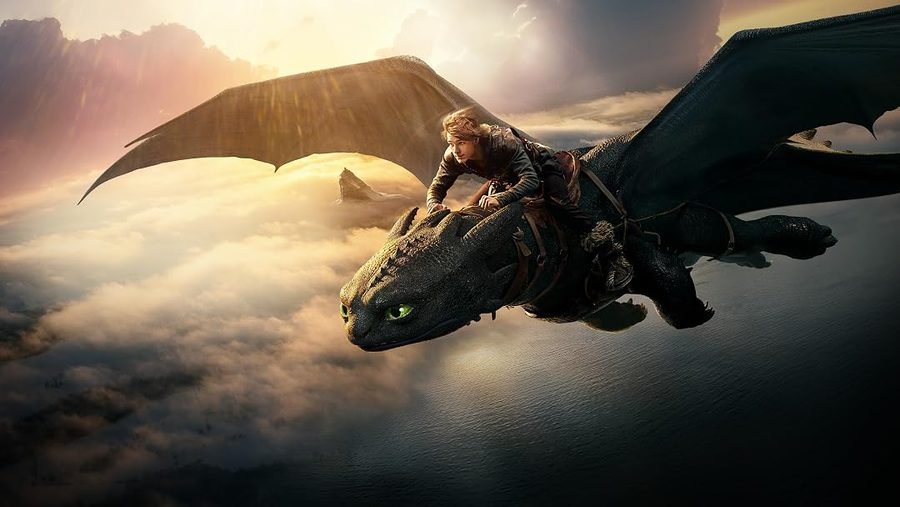
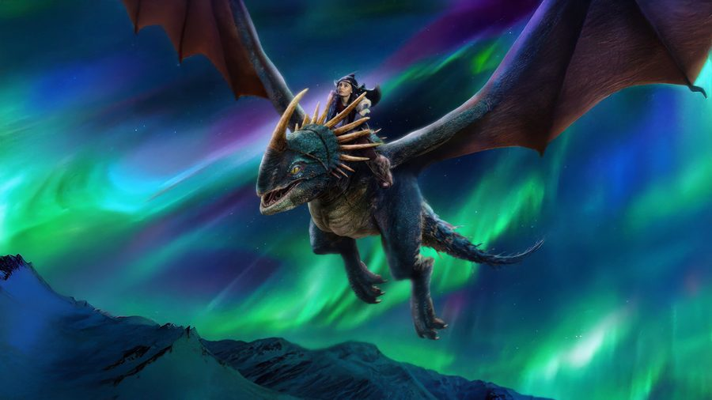
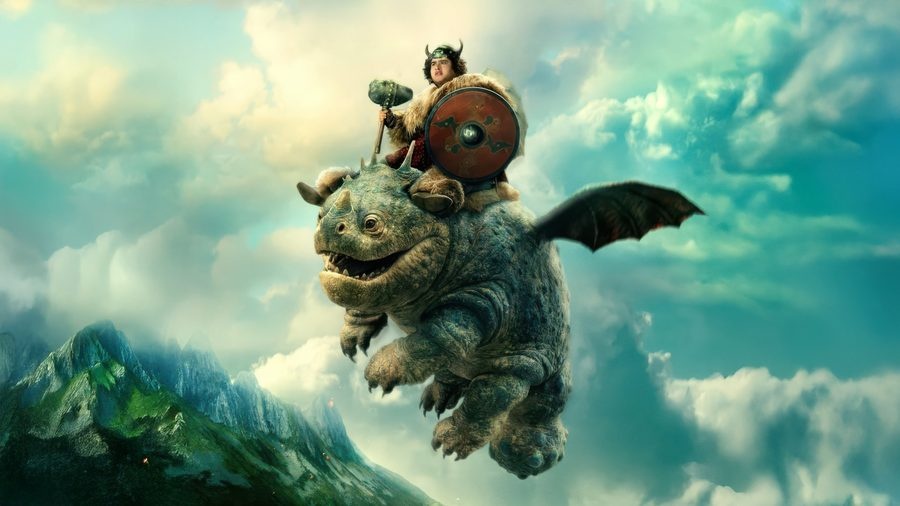
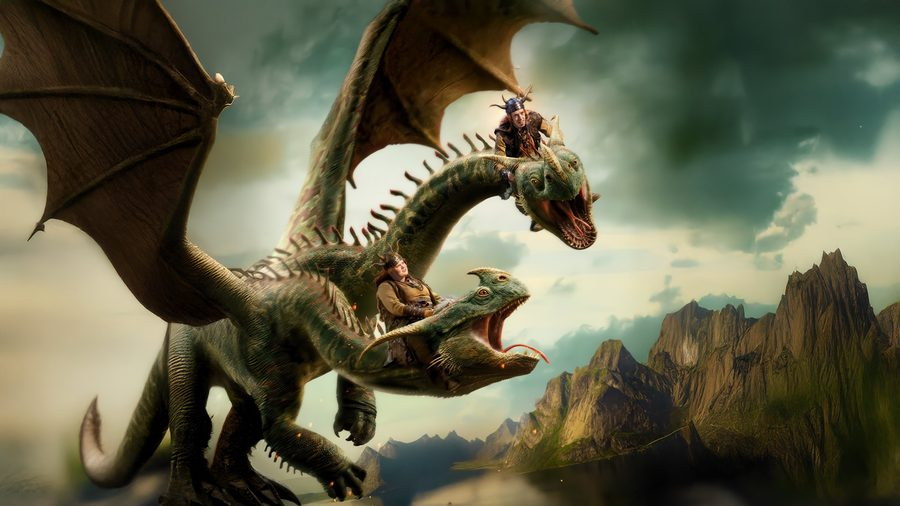
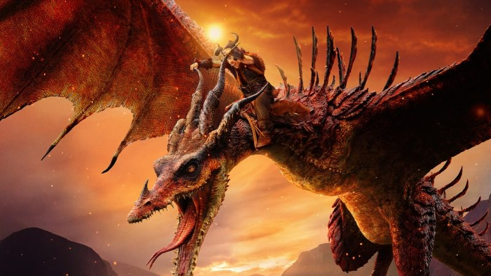
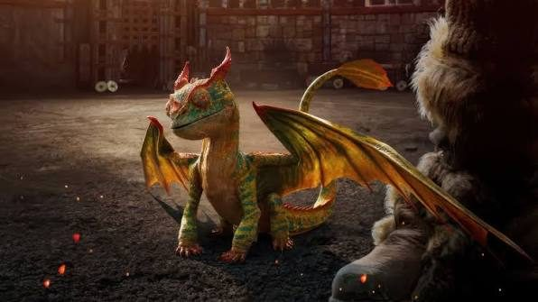

Night Fury
Strike classThe rarest and fastest dragon in the park. Silent, shy and almost impossible to spot at night.
- Status
- Critically endangered
- Habitat
- Cloud cliffs and night skies
- Diet
- Fish
Meet the species of Dragonic Park, learn how they live and how we care for them.
Each dragon belongs to a class. Choose a class to filter the list.

The rarest and fastest dragon in the park. Silent, shy and almost impossible to spot at night.

A colourful bird-like dragon with a spiked tail. Proud and playful once it trusts you.

Small, round and always hungry. Our most popular dragon with young visitors.

Two heads, one dragon. The heads can disagree, which makes feeding time lively.

Bursts into flame when it is excited. Visit it from behind the heat-proof glass.

A tiny, curious dragon the size of a cat. It loves to hide in visitors’ bags.
Every dragon goes through the same five stages.
Laid in a warm, hidden nest. The egg is guarded for several months.
Small and curious. It learns to eat and to use its first flames or sounds.
Wings grow strong. It practises flying with the adults.
Fully grown. It finds a territory and a mate.
A rare, wise dragon that can live for centuries.
Dragons need space, the right climate and quiet nesting sites. Habitat loss is the first threat to every species in our collection.
Our vets check every dragon each month: weight, wings, teeth and fire glands. Sick dragons are treated in a separate quiet clinic.
Adopt a dragon, buy from the shop or book a visit. Every ticket pays for care and for protecting wild nests.